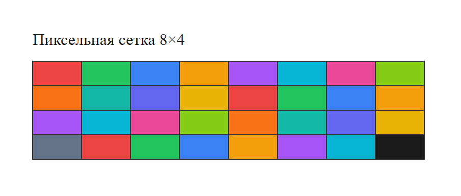
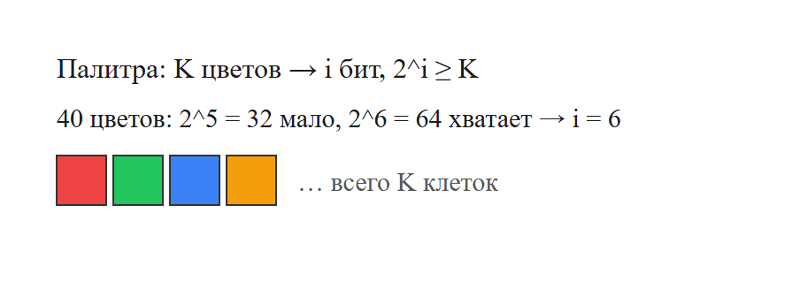
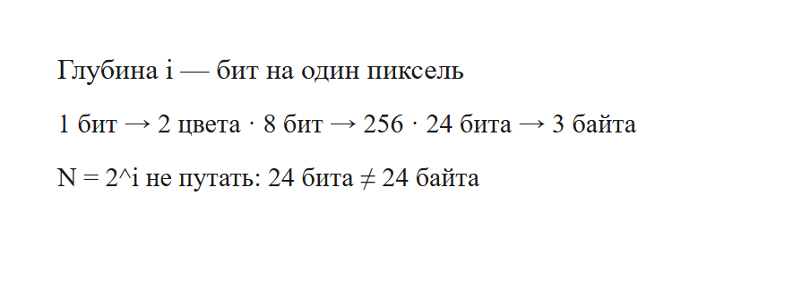
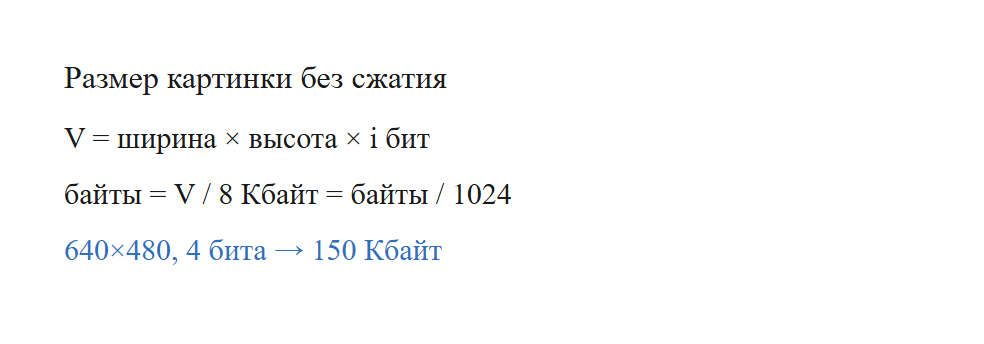
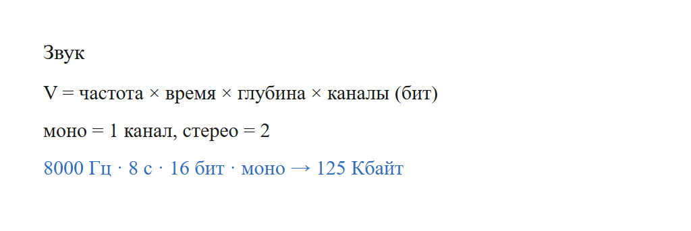

Типичная тема — растровая картинка или звук. Нужно посчитать объём файла, число цветов, битовую глубину или частоту дискретизации. Формулы короткие. Ловушка почти всегда одна: перепутать биты и байты или взять 1000 вместо 1024.
Пиксель — одна клетка картинки. У каждой клетки свой цвет. Чем больше клеток, тем подробнее изображение.

Цвет пикселя кодируют несколькими битами. Это число называют битовой глубиной и обозначают i.
Связь числа цветов и глубины:
N = 2i
Если в палитре K цветов, берут минимальное целое i, такое что 2i ≥ K. Пример: 40 цветов — 25 = 32 мало, 26 = 64 хватает, значит i = 6. Нельзя писать «40 бит».


Без сжатия объём считают так:
V = ширина × высота × i бит
Чтобы получить байты, делят на 8. Чтобы получить килобайты — ещё делят на 1024. Мегабайты — ещё раз на 1024.
На ЕГЭ: 1 Кбайт = 1024 байт, не 1000.

Картинка 8 × 4 пикселя, в палитре 4 цвета. Сколько байт?
Рисунок 640 × 480, 16 цветов. Сколько Кбайт?
Файл занимает 150 Кбайт. Картинка 640 × 480. Сколько бит на пиксель?
Звук режут на отсчёты. Формула объёма:
V = частота × время × глубина × каналы бит
Потом снова делят на 8 (байты) и на 1024 (Кбайт).

Частота 8000 Гц, 16 бит, моно, 8 секунд. Сколько Кбайт?
Если ширину и высоту удвоили, а глубину не трогали, пикселей стало в 4 раза больше — объём тоже в 4 раза.
Сначала находят биты на один пиксель: наименьшее i, при котором 2 в степени i не меньше числа цветов. Потом перемножают ширину, высоту и эти биты. Деление на 8 даёт байты. Деление на 1024 даёт килобайты.
Звук устроен так же, только множители другие: частота, секунды, глубина, каналы. Моно — один канал, стерео — два. 24 бита True Color — это 3 байта, не 24.
Каждый фрагмент запускается отдельно. В конце он печатает ответ. Комментарии на русском говорят, какая строка за что отвечает.
width = 8 # МЕНЯТЬ: ширина в пикселях
height = 4 # МЕНЯТЬ: высота
colors = 4 # МЕНЯТЬ: сколько цветов в палитре
bits = 0
while 2 ** bits < colors: # минимальное i, такое что 2^i >= colors
bits += 1
volume_bits = width * height * bits
print(volume_bits // 8) # байтыЧто менять, если условие другое.
Программа печатает 8.
width = 640 # МЕНЯТЬ
height = 480 # МЕНЯТЬ
colors = 16 # МЕНЯТЬ: 16 цветов -> 4 бита
bits = 0
while 2 ** bits < colors:
bits += 1
byte_count = width * height * bits // 8
print(byte_count // 1024) # Кбайт. На ЕГЭ 1 Кбайт = 1024 байтЧто менять, если условие другое.
Программа печатает 150.
kbytes = 150 # МЕНЯТЬ: размер файла
width = 640
height = 480
bits_total = kbytes * 1024 * 8
print(bits_total // (width * height)) # бит на пиксельЧто менять, если условие другое.
Программа печатает 4.
rate = 8000 # МЕНЯТЬ: частота, Гц
seconds = 8 # МЕНЯТЬ: длительность
depth = 16 # МЕНЯТЬ: бит на отсчёт
channels = 1 # МЕНЯТЬ: моно = 1, стерео = 2
bits = rate * seconds * depth * channels
print(bits // 8 // 1024)Что менять, если условие другое.
Программа печатает 125.
colors = 40 # МЕНЯТЬ: размер палитры
bits = 0
while 2 ** bits < colors:
bits += 1
print(bits)Что менять, если условие другое.
Программа печатает 6.